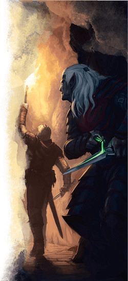

Assassin
Marchons à pas de loup et ne portons que des armes assez petites pour être dissimulées jusqu'à ce qu'elles apparaissent mystérieusement entre les côtes de nos ennemis. Peu de mortels peuvent infliger autant de dégâts en un seul tour qu'un assassin. Mais la capacité de tuer en un seul coup requiert une préparation spéciale et un MD qui propose des scénarios dans lesquels vous pouvez attaquer par surprise.
Capacités de l'assassin
Les roublards entraînés à l'art de l'assassinat sont reconnus pour leur capacité à infliger des dégâts colossaux aux ennemis imprudents, mais ce n'est pas le seul atout dans leur manche. Le roublard gagne accès à quatre capacités de sous-classe, mais la plupart émerge tard. Bien que vous gagniez accès à la première au niveau 3, vous devez attendre le niveau 9 pour la suivante ; vos deux dernières capacités arrivant aux niveaux 13 et 17. En résumé, vos capacités de sous-classe permettent :
- D'asséner des frappes mortelles aux ennemis inattentifs.
- De vous créer une fausse identité pour vous aider à infiltrer les défenses de votre cible.
- D'étudier le comportement d'une autre personne pour imiter ses manières.
- D'infliger des coups encore plus mortels aux ennemis inattentifs.
Avantages de l'assassin
En termes de capacités de combat, l'assassin est un archétype incroyablement simple : attaquez vos ennemis avant qu'ils aient la chance de vous attaquer, surtout s'ils ne savent même pas que vous êtes là. Votre meilleur tour en combat sera indéniablement le premier. Après cela, vous agissez plus ou moins comme n'importe quel autre roublard, à moins qu'il y ait d'autres ennemis que vous pouvez tenter de surprendre et d'assassiner avant qu'ils ne se rendent compte qu'un combat a éclaté.
La capacité Assassinat, que vous gagnez au niveau 3, semble remarquablement puissante à première vue. Bien qu'elle soit légitimement puissante, elle a une formulation qui prête à confusion et qui peut vous mener à la croire plus vicieuse qu'elle ne l'est en réalité. Cela fait référence à l'effet de "coup critique automatique", qui double tous les dés de votre attaque, y compris les dés d'Attaque sournoise. Une attaque n'est un critique automatique que si la créature que vous attaquez est surprise. Cela veut dire que la créature NE PEUT PAS être consciente de votre présence ou qu'un combat n'a pas encore commencé. La surprise n'a lieu qu'au début d'un combat et seulement si la créature en combat ignore totalement la présence de tous les attaquants.
Au-delà de vos capacités de combat, l'assassin acquiert une gamme de capacités sociales qui peuvent vous donner une maîtrise totale de l'art du déguisement et de la tromperie. Vos capacités Expert en infiltration et Imposteur couvrent un large domaine d'utilisations, vous permettant de fabriquer de fausses identités et même d'accaparer l'identité de quelqu'un d'autre. Plus que simplement copier l'apparence de quelqu'un, comme un changelin pourrait le faire, ces capacités vous permettent d'imiter de façon crédible les manières de cette personne et même son écriture, vous permettant de fabriquer des documents. Ces capacités sont incroyablement puissantes dans une campagne focalisée sur l'intrigue et dans laquelle les mots et les lettres sont aussi redoutables que les épées et les sorts.
Inconvénients de l'assassin
La plus grande force hors combat de l'archétype assassin est aussi ironiquement sa plus grande faiblesse. Les capacités Expert en infiltration et Imposteur sont efficaces dans les bonnes conditions, mais sont très peu utiles en dehors de ce créneau particulier. Dans des campagnes avec des antagonistes simples pour qui l'intrigue n'est pas importante (si votre campagne est plus Infinity War que James Bond), alors ces capacités ne vous seront pas d'une grande utilité. Des roublards créatifs pourraient être capables d'en tirer quelque profit, mais ces capacités nécessitent vraiment que votre MD prépare le terrain pour qu'elles soient utiles.
Vous pourriez demander à votre MD d'inclure des éléments d'intrigue qui conviennent à votre sous-classe. Cependant, si votre MD n'est pas disposé à dévier l'arc de sa campagne, ou si vous aimez assassiner des ennemis mais n'êtes juste pas intéressé par le subterfuge, vous pourriez vouloir vous multiclasser. Les roublards qui ne sont pas intéressés par le fait de fabriquer de fausses identités choisissent souvent de se multiclasser après avoir atteint le niveau 8, avant de gagner leur capacité de sous-classe de niveau 9. De bonnes options potentielles de multiclassage incluent le guerrier (champion et maître de guerre sont tous deux utiles), le moine (particulièrement si vous souhaitez suivre la voie de l'ombre) ou, si vous souhaitez faire un choix moins conventionnel, le clerc (en suivant un domaine comme celui du savoir ou de la duperie) ou l'ensorceleur (avec l'origine magique des ombres issue du Xanathar's Guide to Everything) peuvent être des choix passionnants.
Exemple de personnage
Comme la plupart des classes dans D&D, le roublard ne choisit pas sa sous-classe avant le niveau 3. Si vous jouez un roublard à partir du niveau 1 et pensez devenir un assassin plus tard, vous devriez choisir une race qui augmente votre Dextérité. Si vous prévoyez de créer de fausses identités, envisager de faire du Charisme votre seconde meilleure caractéristique. Si vous n'êtes pas intéressé par le subterfuge et préférez assassiner des monstres dans des donjons, faire de l'Intelligence (pour améliorer votre compétence d'Investigation) ou de la Sagesse (pour améliorer votre compétence de Perception) votre seconde meilleure caractéristique serait judicieux.
Les elfes des bois, les elfes noirs et les halfelins pieds-légers font d'excellents assassins grâce à leurs bonus en Dextérité, en Charisme ou Sagesse et parce qu'ils ont des traits raciaux qui leur facilitent la tâche pour se cacher. Les gnomes des forêts font d'étonnement de bons assassins grâce à leurs bonus en Dextérité et en Intelligence, et leur capacité à lancer le sort illusion mineure à volonté. Les demi-elfes peuvent être des assassins suaves et charismatiques et les humains sont des êtres flexibles qui peuvent s'adapter à n'importe quelle situation, surtout si vous jouez un humain variante avec le don Discret.
Comme d'habitude, l'historique de votre personnage est à votre convenance. Vous pouvez inventer toutes sortes d'histoires intéressantes et personnages excentriques en associant des historiques invraisemblables avec l'archétype assassin. Êtes-vous un assassin charmant qui préfère observer ses adversaires au cours d'une partie de jeu des Dragons tout en sirotant un martini au shaker ? Les historiques héros du peuple ou charlatan vous serviraient bien. Ou êtes-vous un tueur silencieux et stoïque, forgé par la guerre ou la nature ? Les historiques soldat ou sauvageon vous iraient.
Pour l'équipement, du moment que vous avez une arme avec la propriété finesse (telle qu'une rapière, une épée courte ou une dague), vous avez pratiquement un permis de tuer. Les dagues ne font peut-être pas beaucoup de dégâts, mais leur petite taille leur permet d'être facilement dissimulées. C'est bien plus utile que quelques points de dégâts supplémentaires, surtout que vos capacités Attaque sournoise et Assassinat seront vraiment la source principale de vos dégâts et non pas le dé de dégâts de votre arme. Si vous prévoyez de vous infiltrer dans des habitations, le sac de cambrioleur vous aidera. Sinon, choisissez un sac d'exploration souterraine.
Dons
Au niveau 4, vous avez le choix entre Amélioration de caractéristiques et un don. Choisir Amélioration de caractéristiques permet d’augmenter une caractéristique de +2 (comme augmenter votre Dextérité de 16 à 18) ou augmenter deux caractéristiques de +1 (comme augmenter votre Dextérité de 15 à 16 et votre Sagesse de 13 à 14). Augmenter vos caractéristiques vous rend meilleur dans un large éventail de choses. Par exemple, augmenter votre Dextérité augmente vos chances de toucher lors d'une attaque avec une arme, diminue les chances que les ennemis vous touchent et vous rend meilleurs aux jets de Dextérité.
Les dons, d’un autre côté, vous donnent une capacité spéciale qui pourrait être plus utile dans des circonstances particulières, contrairement à l’amélioration générale apportée par Amélioration de caractéristiques. La Dextérité est votre caractéristique la plus importante car elle gouverne votre capacité à toucher lors de vos attaques. Lorsque vous avez atteint 20 (la valeur maximale) ou même 18 (une très bonne valeur) dans cette caractéristique, vous voudrez sûrement choisir un don. Vous pouvez choisir n’importe quel don pour appuyer votre concept de personnage, mais certains dons seront sûrement plus utiles que d’autres.
Vigilant. Vous incarnez un personnage qui adore avoir l'initiative lors d'un combat, vu que votre capacité Assassinat vous donne un avantage aux attaques contre les créatures qui n'ont pas encore agi.
Comédien. Si vous ne voulez pas trop investir en Charisme, cela vous donne des capacités très spécifiques qui complémentent vos compétences d'imitation.
Meneur exaltant. Un choix étrange, mais si vous avez beaucoup investi en Charisme, c'est un bon moyen d'être un meilleur coéquipier en galvanisant votre groupe.
Sentinelle. N'oubliez pas, vous pouvez utiliser votre Attaque sournoise une fois par tour. Pas par round, par tour. Ce qui veut dire que vous pouvez effectuer une Attaque sournoise à votre tour pour ensuite utiliser votre réaction durant le tour d'un ennemi pour attaquer à nouveau et potentiellement placer une Attaque sournoise. Le plus efficace est de se coordonner avec ses alliés pour vous assurer qu'ils sont toujours en position pour vous aider à placer une Attaque sournoise.
Tireur d'élite. Si vous voulez assassiner vos cibles à distance (et pourquoi ne voudriez-vous pas ?), ce don augmente votre potentiel de dégâts déjà incroyable. Prenez garde cependant. Comme vous n'avez qu'une seule attaque par tour, vous voudrez parfois juste toucher pour infliger vos dégâts d'Attaque sournoise. Avoir un malus de -5 au toucher et manquer votre attaque ne vaut pas toujours le coup pour gagner 10 points de dégâts supplémentaires.
Discret. Être capable de tirer sans dévoiler votre position est extrêmement utile. Les autres avantages sont aussi agréables.
Basé sur un article de James Haeck, traduit par Nathyouss